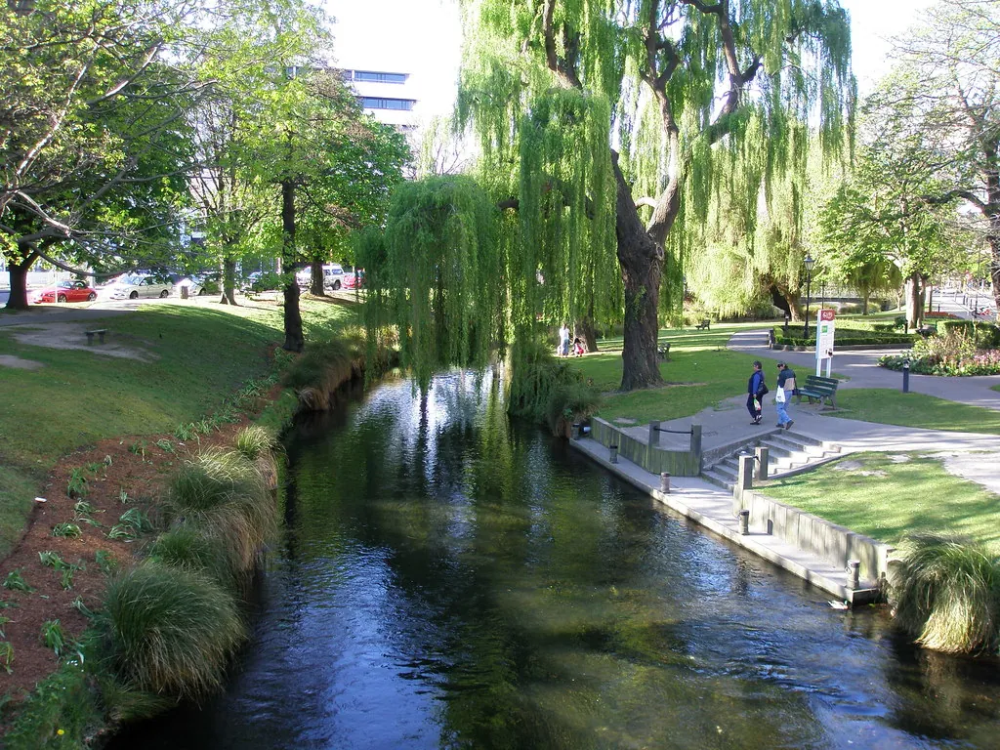
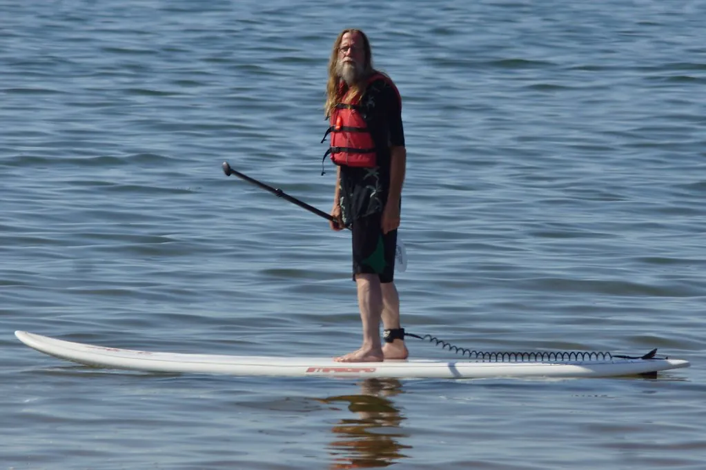
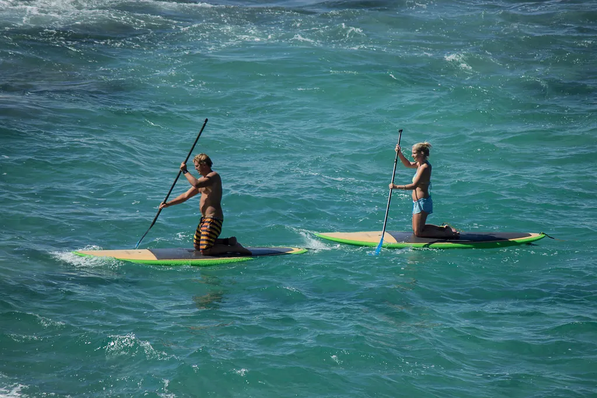
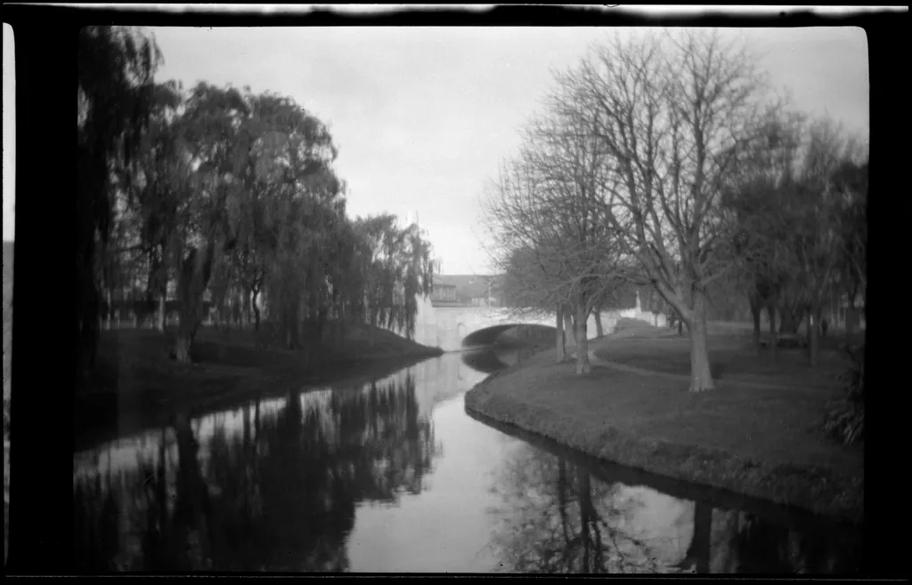

See Christchurch from the water
Stand-up paddleboarding on the Ōtākaro Avon, right through the middle of the city.
Book a paddleWhere you get on the water
Two launch points on the river. Tell us which one suits you when you book.
-
Botanic Gardens
Launch beside the gardens, among the willows and the ducks.
Find it on the map -
Through the central city
Under the bridges and past the city on a crossing from one end to the other.
-
Avon Loop ramp, Kilmore Street
The ramp on the Avon Loop, a short walk from the centre.
Find it on the map
Four ways onto the river
Learn the basics
A first lesson: standing up, paddling straight, turning, and getting back on.
Cross the city
The long one. Paddle across Christchurch on the river.
Morning mission
Out early, while the water is at its calmest.
Evening paddle
End the day on the river as the city lights come on.


Prices and session times change with the season. Ask for this week’s when you book.
Book a paddle
Fill this in and your email app opens with the booking request ready to send. We reply to confirm the time and launch point.

The same river, a hundred years ago
People have boated on the Avon for well over a century. The willows are still there.
Follow on Facebook